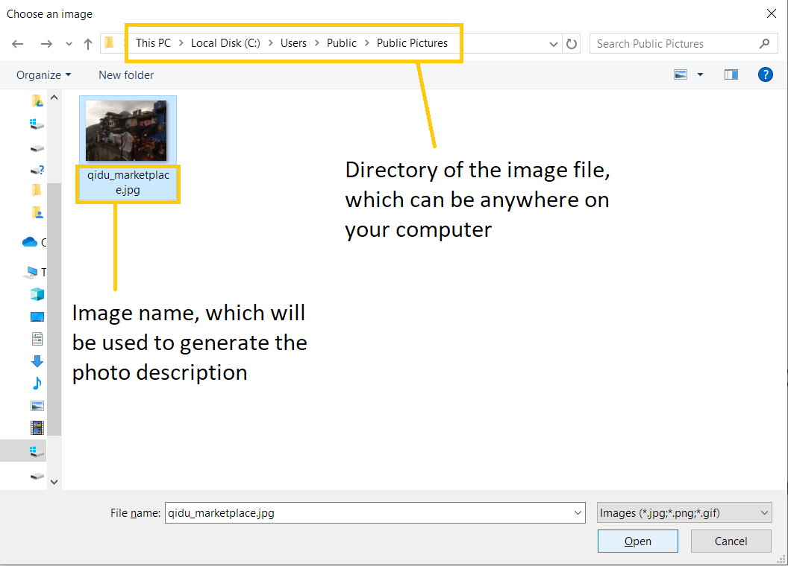

Overview
My team and I were tasked with enhancing, or morphing an existing address book application, built on JavaFX, for our software engineering project.
We chose the latter, which’s end end product was TravelPal, a desktop travelling companion application catered for leisure travellers. This application allows travellers to manage their travelling itinerary, bookings, expenses and inventory conveniently in one place, while also providing various other features catered to leisure travellers.
As per the constraint given to us in developing this project, the user interacts with TravelPal mainly using a command line interface (CLI), although it has user interface alternatives for most of its operations.
My main role was to develop the diary feature, which allows the user to store and edit memorable details of their trip with both multimedia and text.
Summary of contributions
-
Main contribution: added the diary feature.

-
What it does: Overall, this feature allows the user to key in memorable details of his / her travels, and store multimedia such as photos of the trip, displayed in a user friendly and eye-catching format.
-
Justification: Leisure travellers often want to reminisce on previous trips they have made long after the trip, or share its details with friends and loved ones.
-
Highlights: Due to the large amounts of displayable multimedia, the user interface of this feature was most challenging to implement, requiring much analysis and consideration in striking a balance between code performance and organization.
-
-
Second Main Contribution: Base address book code refactor
-
What: Refactored all of the
logiccode component of the base address book code for common use in TravelPal, along with severaluicomponents. -
Justification: Although the code base given to us was extensive, many of the common functionality we had in mind for TravelPal, such as the ability to switch between pages of the application, was not immediately implementable from address book.
-
Highlights: In considering the common functionality needed by the team, it was challenging to find solutions to build upon the existing code rather than make intrusive code changes. Given the limited time frame of our project, it was crucial that we utilised much of the existing code to speed our development process.
-
-
Third Main Contribution: Implemented the base trip manager and preferences screens

-
What: The trip manager allows the user to create and delete trips, and serves as the entry point into a single trip’s sub-features. The preferences screen allows the user to change several configuration options in the application without having to go into the
jsontext configuration file to edit it. other sub-features. -
Justification: These were common features required before the team commence on developing their own sub-features. Moreover, having the ability to edit configurations in the application saves the user from having to go manually edit the configuration files on their system manually, which can be daunting.
-
-
Code contributed: [Functional code] [Test code]
-
Other contributions:
-
Idea generation:
-
Contributed main idea of TravelPal and its various sub-features (itinerary, diary, expenses, etc.) during project inception, which the team agreed upon. (see travelpal idea generation google docs)
-
-
Enhancements to existing features
-
Enhanced navigation bar icon looks #68
-
-
Project management:
-
Tools:
-
Set up several continuous integration services (appveyor, coveralls)
-
Set up team github organization and repo
-
-
Contributions to the User Guide
Given below is one of the sections I contributed to the User Guide, on the |
Adding a photo
If you have just created a fresh diary entry, and you’re wondering where to go next, then you may want to start by adding your photos to display in the gallery ([diary_gallery_display]).
Here, there are 3 options for you to choose, the last option being the least flexible but also the fastest, if you are more comfortable with using the user interface than the command line input.
In all options, the image file chosen should be of the file types .jpg, .jpeg, or .png
| The image files are not copied to where your the TravelPal application file is. Instead, the absolute file path (see [glossary]) to the image file on your computer is stored! If you move or delete the original image on your system, then you will have to add the photo again, and a placeholder image will be shown in place of your image. |
Using the addphoto command with the fp/ prefix
-
Usage: Typing in the command
addphoto fp/<file path> [d/<description>] [dts/<date taken>], with the arguments described below, will add the image file located at the specified file path on your computer to the gallery display. -
Arguments:
-
<file path>- Relative file path from the location of the TravelPal’s jar file, or an absolute file path. -
<description>(optional) - The description of the photo to be shown in the gallery, of maximum length 20. If left unspecified, the file name, truncated to the maximum length is used instead. -
<date taken>(optional) - The date taken of the photo, of the format d/M/yyyy HHmm. If left unspecified, the last modified date of the file is used instead.
-
Example Usage
Scenario:
-
You are currently viewing the diary entry for day 1, which is empty, and you want to add a new photo.
-
You are also a command line savvy user that loves and understands how to manually specify relative or absolute file paths (see [glossary]), hence you opted for this option, rather than Using the
addphotocommand with thefc/prefix or [Using theaddbutton under the gallery display]. -
Also, you want to give the photo a custom description, but want to use the last modified date of the image file in your computer as the date taken for the photo. Shown below is an example of the photo on your computer you want to add,
snowymountains.jpg, that is located in the same place as the TravelPal application.

-
You should type in the
addphoto fp/snowymountains.jpg d/picturesque mountainscommand in the command line input, then press enter, or click the navigation button3for day 3, as highlighted below.-
Here, the relative
<file path>is simply the name of the file,snowymountains.jpg, since the image file is located in the same directory as the TravelPal application. Figure 2. Example usage of the
Figure 2. Example usage of theaddphotocommand with thefp/option
-
-
The photo, with the specified description and last modified date will be added. You should see a brief confirmation message in the command result box.
-
Additionally, there will be a auto-generated photo numbering, for use as described in [diary_text_displaying_images].
-
addphoto command with the fp/ optionUsing the addphoto command with the fc/ prefix
-
Usage: Typing in the command
addphoto fc/ [d/<description>] [dts/<date taken>], with the arguments described below, will add the image file located at the specified file path on your computer to the gallery display. -
Arguments:
-
fc/- opens your system’s user interface dialog to allow choosing an image (of file types.jpg .jpeg .png). -
<description>&<date taken>(optional) - as described in Using theaddphotocommand with thefp/prefix.
-
The fc/ prefix takes precedence over the fp/ argument if both are specified.
|
Using the Add button under the gallery display
-
Usage: Clicking the
Addbutton located under the gallery display area ([diary_gallery_button_bar]) will open your system’s user interface dialog to choose an image file. -
If this option is used, then the
<description>&<date taken>are not specifiable and will be auto generated as described in Using theaddphotocommand with thefp/prefix.
Example Usage for addphoto command with fc/ option or add button
Scenario:
-
You are currently viewing the diary entry for day 1, which is empty, and you want to add a new photo using your system’s file choosing user interface, leaving the application to generate the
<description>and<date taken>fields automatically. -
Also, the image file you want to add is
snowymountains.jpg, and is not located in the same place as the TravelPal application.-
You can type in the
addphoto fc/command in the command line input as highlighted in yellow below, and press the 'enter' key, or you can click theAddbutton. Figure 4. Example usage of adding a photo through the
Figure 4. Example usage of adding a photo through theaddphotocommand using thefc/option, or theAddbutton
-
In this example, the <description> and <date taken> fields are automatically generated. However, if you are using
the addphoto fc/ command, you may specify them manually as described in Using the addphoto command with the fc/ prefix
|
-
Your system’s file chooser user interface, which may look different depending on your operating system (windows / mac / linux) (see [glossary]) will be opened, as shown below.
 Figure 5. Example file chooser user interface for the windows operating system
Figure 5. Example file chooser user interface for the windows operating system -
Next, you can simply use the file chooser user interface to choose an image located anywhere on your computer!
Figure 6. Example image file in the file chooser user interface to add -
That’s it! Your photo, with the auto generated image name and date will be placed into your gallery, and you will see a confirmation message in the result display.
-
Additionally, there will be a auto-generated photo numbering, for use as described in [diary_text_displaying_images].
 Figure 7. Result after choosing the image 'qidu_marketplace.jpg' in step 3
Figure 7. Result after choosing the image 'qidu_marketplace.jpg' in step 3
-
Deleting a photo
If you mistakenly added a photo to the wrong diary entry, or want to remove a certain photo from an entry, you can
use the delphoto command to do so.
Contributions to the Developer Guide
Given below is one of the sections I contributed to the Developer Guide. They showcase my ability to write technical documentation and the technical depth of my contributions to the project. |
[Diary] Photo Manager
The photo manager pertains to components for storing, and displaying user specified photos on the disk.
Aspect : Model

Photo
The model for a photo stored in memory is stored in the Photo class.
It contains three key fields, that is, the imagePath, description, and dateTaken fields which are used to display key information of the image to the user.
The imagePath and dateTaken were implemented respectively with the robust java apis of Path and LocalDateTime, while description is simply a String.
In addition, a JavaFX Image is also stored inside the photo (not shown in [diary_photo_model_class_diagram] for brevity),
which holds the Image to use for displaying in an ImageView inside the user interface. The Image is cached this way,
as the Image construction directly in the user interface involves costly I/O operations.
PhotoList
On the other hand, the Photo models are contained within a PhotoList. It stores the photos in a JavaFX ObservableList,
so that changes are registered with the user interface. (see Aspect : User interface of photo manager)
It also supports several convenience wrapper methods around the underlying ObservableList, tailored for use for the logic components.
Restrictions on fields during Photo instance construction:
-
Several restrictions on the description are enforced by class level
Patternmatchers, such as the length of the description. -
While the image file path is parsed and checked using the java
Filesapi, it is non-strict in that a path to an invalid image will result in theImagefield referring to the default class level variable that specifies a placeholder image.-
However, the original user entered file path is still stored inside the Model, to guard against accidental file deletion.
-
Aspect : User interface of photo manager
The main UiPart component that displays photos is the DiaryGallery.
It abides by the Page implementation (see [page_api]), and is thus contained within
in one of DiaryPage’s placeholders.

The DiaryGallery contains a PhotoList, with which it uses to populate its ListView<Photo> component.
The ListView uses a small, clean custom cell factory, which sets the cells of the ListView to use DiaryGalleryCards
as its graphic, generated via the ListCell index and the Photo item.
DiaryGalleryCards display the information in the Photo model supplied with a series of Labels and one ImageView.
Additionally, the index of the card as displayed in the DiaryGallery is also displayed, but not stored in the model.
Aspect : Logic of photos
The logic for photo manager plays to the same PageParser structure of parsing commands, that is,
DiaryParser returns either AddPhotoParser, DeletePhotoParser when the appropriate command word is parsed, which
in turn returns instances of AddPhotoCommand and DeletePhotoCommand respectively.
Aspect : Adding photos (through command line file path or os file chooser)
Following DiaryParser returning an instance of AddPhotoParser that calls parse() on the user specified arguments,
a number of operations happen, as per the UML sequence diagram below ([AddPhotoParser parse sequence diagram]). The specifics of getFilePath,
parseDescription, parseDateTime are detailed further down below. ()

Parsing the image file path
-
Using
ArgumentMultimap, the file chooser prefix, "fc/", is checked for. If present, the OS file choosing gui is opened usingImageChooser(a simple extension of JavaFX’sFileChooserenforcing image file extensions), and the data file path prefix is ignored. -
Otherwise, the presence of the data file prefix is checked, and its subsequent argument is validated as a valid image file.
-
If the file chooser prefix is unspecified and the data file path is invalid,
AddPhotoParserthrows aParseException
Parsing the description
-
If the description prefix is present,
AddPhotoParsertries to construct thePhotoinstance with the specified input. If validation of the description, as described in the Aspect : Model fails, then a ParseException is thrown during the instance construction. -
Otherwise, the file name of the validated file from Parsing the image file path (truncated to match
Photo’sdescription constraints) is used.

Parsing the date of the photo
-
If the date time prefix is present,
ParserDateUtilis used to parse the date time as per the app level date formats. AParseExceptionis automatically thrown in the case of date parsing failure, byParserDateUtil. -
Otherwise, the last modified date of the validated file from Parsing the image file path is used.
The Photo instance is then constructed, and passed to AddPhotoCommand which simply adds the Photo to the
current PhotoList of the DiaryEntry.
Aspect : Deleting photos
Following DiaryParser parsing the 'delphoto' command from the user, an instance of DeletePhotoParser is created, which parses the received arguments.
-
The
DeletePhotoParsersimply parses the arguments for a valid integer, failing which aParseExceptionis thrown. -
An instance of
DeletePhotoCommandis returned, which attempts a delete operation on the currentPhotoListof theDiaryEntrywith the specified index. ACommandExceptionis thrown to alert the user if the index was out of bounds.
Design considerations
| Feature | Alternative 1 | Alternative 2 |
|---|---|---|
Validation of image file path |
The first option is to implement the file path validation directly inside the This would have enforced a stricter level of validation on the image file path throughout the code,
if an instance of However, since the storage model for |
The second, chosen option, was to implement the file path validation inside the parser itself. Although this option limited the validation to only the 'addphoto' command, it allowed for leeway in
image path validation in other areas such as Moreover, Since the function for parsing the image file can and was abstracted into a single utility function, any other areas in future development needing this functionality can simply reuse this code. Overall, this leads to a more robust behaviour of the application, while providing the same level of extensibility as the first option. |